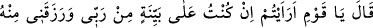
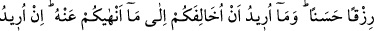
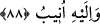

88. Dedi ki: “Ey kavmim, ya ben Rabbim tarafından (verilmiş) apaçık bir delil
üzerinde isem ve O bana kendinden güzel bir rızık vermişse buna ne dersiniz? Sizi
menettiğim şeylerin aksini yaparak size aykırı davranmak istemiyorum. Ben
sadece gücümün yettiği kadar ıslâh etmek istiyorum. Fakat başarmam ancak
Allah’ın yardımı iledir. Yalnız O’na dayandım ve yalnız O’na yönelirim.”
Şuayb “dedi ki: “Ey kavmim, ya ben Rabbim tarafından” verilmiş “apaçık bir delil
üzerinde isem” benim ve davranışlarımın sâhibinden parlak bir burhan ve apaçık bir
huccet üzerinde isem...
Buradaki şek ifâdesi muhatapların hâli dikkate alınarak kullanılmıştır. Şuayb (a.s.),
bununla Allah Teâlâ’nın kendisine bahşettiği peygamberlik ve hikmeti ifâde ediyor ve
böylece ‘Bunları emredip şunları yasaklarken hiçbir senede dayanmıyor.’ şeklindeki
çirkin sözlerini reddetmiş oluyor.
“Ve O bana kendinden” kendi katından “güzel bir rızık vermişse” bu güzel rızık
peygamberlik ve hikmettir “buna ne dersiniz?” bana haber verin bakalım.
Apaçık birer delil olan peygamberlik ve hikmetin aynı zamanda güzel bir rızık da
olduğuna dikkat çekmek için bunlardan “güzel rızık” diye bahsedilmiştir. Nasıl rızık
olmasınlar ki onun peygamberliği hem kendisi için hem de ümmeti için ebedî hayatın
kaynağıdır.
Bazıları ise şöyle der: Buradaki “güzel rızık”, Allah Teâlâ’nın Şuayb (a.s.)’a hiçbir
haram şâibesi, yani eksiltme vesâire olmaksızın bahşettiği helâl kazançtır. Şuayb (a.s.),
malı mülkü fazla olan biriydi.
Yâni deyin bakalım, şayed ben Rabbim katından apaçık bir delil ve yakin üzerinde
isem, gerçekten de peygamber isem, bu durumda size haramı helâle karıştırarak; Allah’ı
tek kabul etmenizi, putlara tapınmayı bırakmanızı, masiyetlerden vazgeçmenizi adâlet ve
denge üzere davranmanızı emretmemek suretiyle peşinizden gitmem, size tâbi olmam
benim için doğru olur mu?! Oysa peygamberler sadece bunları emretmek için
gönderilmektedir.
Ölçü ve tartıyı eksik tutmayı size yasaklarken “sizi menettiğim şeylerin aksini
yaparak” kendim buna meylederek “size aykırı davranmak istemiyorum.” Ölçüyü ve
tartıyı eksik tutma suçunu kendim irtikab ederken size bir şeyi yasaklayamam. Yani,
kendim için neyi tercih ediyorsam, sizin için de onu tercih ediyorum. Çünkü, insanlara
ameliyle değil de sözleriyle vaaz edenler vâiz değildir.
el-İhyâ’da şöyle denir: Allah Teâlâ İsa (a.s.)’a şöyle vahyetti: “Kendine vaaz et, şayet